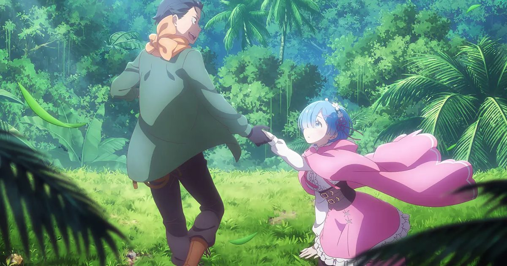

2026-11-15 · 新番深读

11 月 14 日，东京立川 Stage Garden，TV 动画《Re:从零开始的异世界生活》10 周年纪念活动 「10th EVENT -Starlight Party-」的压轴环节：第五季制作决定。 超特报视觉图里，昴牵着雷姆的手走向热带丛林，标语写着「为了你，一次又一次」。 看起来岁月静好——如果你只看过动画的话。大多数报道会停在「S5 确认 + 视觉图」的通稿层面。 真正值得拆的是：这张图对原著读者为什么近乎威胁；第五季要面对的第七章帝国篇 是一个 12 卷体量、读者评价两极分化的硬骨头；以及原作长月达平那句「碎心设计」的双关语到底在预告什么。
先交代场合。2026 年是 Re:ZERO 动画十周年，官方一年前就挂出了「10 大企划」清单： 王选候补者与骑士的手办、首次原画展、游戏联动、第四季剧场先行上映舞台问候…… 第五季是这张清单的第十项，也是最后一张牌——用续作给十周年收尾， 等于官方亲口回答了「S4 之后还有没有」的所有猜测。而第四季 8 月 12 日才开播《夺还篇》， 也就是说，续作是在当前季尚在播出的窗口期内宣布的。对一个间隔动辄三年的系列来说， 这个宣布时机本身就是信息：制作委员会不想再让粉丝等四年了。
目前官方只给了三样东西：制作决定、超特报视觉图、长月达平的寄语。 播出时间、制作公司、导演、声优阵容全部未公布。以下关于章节的内容， 一半来自原作本人的暗示，一半来自轻小说的结构——这正是这次官宣里最有嚼头的部分。
先说视觉图。昴牵着一脸灿烂微笑的雷姆向前跑，阳光、丛林、飞舞的绿叶—— 但原著读者看到的第一反应不是甜，是凉：第七章里的雷姆是失忆状态， 她不认识昴，把他当成麻烦甚至威胁；而「为了你，一次又一次」这句标语， 说的是一个用死亡回归反复轮回的男主的日常。把最残酷的篇章画成最温馨的画面， 官方不是不懂，是故意的——日媒的解读很到位：在 Re:ZERO 的语境里， 这种平和的画面「几乎是一种威胁」。
再说长月达平的寄语。他确认第四季对应的第六章（昴星座塔篇） 曾被称为全作最难的部分，然后话锋一转：「请放心，之后的第七章旅程同样残酷， 难度升至地狱（Inferno）。故事将继续以『令人安心的碎心设计』推进——没有打错字。」 这是个日语双关：「用户友好设计（ユーザーフレンドリー）」里的「友好」被换成了发音相近的 「碎心」。作者在续作官宣的场合，用文字游戏告诉粉丝：接下来会照常虐你们。 这种坦诚反而让人安心——毕竟被昴的绝望反复击碎这件事，本来就是 Re:ZERO 的产品特性。
然后是第七章的体量。帝国篇从轻小说第 26 卷前后延伸至 33 卷 （不同口径因 EX 卷与分章方式略有出入），约 12 卷的厚度，超过第六章。 故事发生在鲁格尼卡之外的军事帝国伏拉基亚：昴、失忆的雷姆与露易丝被突然传送过去， 与大部队失散；昴被抓进剑奴岛沦为角斗士，遇见帝国剑豪塞西尔乌斯； 真正的关键人物是流亡的前帝国皇帝文森特（化名「阿贝尔」）—— 一个把昴的生存智慧按在地上摩擦的角色。还有托德·方， 一个靠偏执与条理办事的普通士兵，被读者公认为比任何魔女教大罪司教都更恐怖的「人类级反派」。
期待侧很清楚：日本读者点名最多的段落是剑奴岛篇—— 昴在没有死亡回归知识优势、没有队友、没有雷姆配合的绝境里，靠变装与谈判求生， 这是角色成长密度最高的一段；「Natsumi Schwartz」变装名场面、 帝都最终决战、普莉希拉阵营的回归，都是原作公认的高光。
担心侧同样明确，而且更值得写。第一，帝国篇在原作读者口碑榜上常年排名靠后—— 有日本读者直言它在自己心中的章节排序里垫底；皇帝文森特「性格恶劣到我差点弃书」的吐槽并不少见。 它是一部需要耐心消化的政治群像戏，不是第六章那种单点爆发的塔爬层。 第二，体量：日本读者的共识是「至少三季（three cours）」起步， 也就是 36 话以上——对比第四季两分割共 19 话讲完 7 卷，帝国篇的 12 卷意味着 White Fox 面对的可能是系列史上最长的一次连投。 第三，最扎心的一条来自日本观众的 S4 总结帖：「请把作画质量带回来。」 高期待与制作资源之间的张力，会是第五季最大的悬念。
档期推演。历季间隔：S1（2016.4）→ S2（2020.7）约 4 年； S2 → S3（2024.10）约 3.5 年；S3 → S4（2026.4）骤缩到 1.5 年； 而 S5 在 S4 播出中就官宣。官方没有给时间，但两个信号（间隔递减 + 提前官宣） 指向一个合理猜测：2027 年末到 2028 年之间开播， 且大概率延续分割季度制——否则 12 卷的帝国篇塞不进任何常规档期。
我们的观察：把「用温馨画面包装残酷内容」这件事单独拎出来看， 这是 Re:ZERO 营销策略的一贯打法：S3 宣传期主打的也是水都普利斯提拉的群像海报， 而正片开场就是惨烈攻防。这个系列从不剧透虐点，因为它知道粉丝消费的正是「被预告欺骗」的落差感。 超特报视觉图延续的不是画面风格，是信任模式。
我们的观点：帝国篇口碑分化，我们认为不是原作的问题，是阅读契约的问题： 前六章的爽点是「昴靠信息差破局」，帝国篇的爽点是「信息差被彻底没收之后，昴还能剩下什么」。 动画观众如果带着第六章的期待进来，前几集大概率会失望；但熬过剑奴岛之后， 这可能是全作人物弧光最完整的一章。我们的建议：动画党请提前接受「这不是一个爽章」。
我们的案例对比：同样是「口碑分化章节动画化」的先例，最像的是 《进击的巨人》玛雷篇——视角切换、主角缺席大半、新阵营信息量爆炸，动画化初期骂声一片， 但完整看完的观众评价普遍回升。帝国篇有同样的结构风险与同样的翻盘可能。 反例则是某些为压缩篇幅而砍掉政治铺垫的改编——帝国篇恰恰是最不能砍铺垫的一章。
我们的实验：我们做了一个粗糙的推演：以 S4「两分割 19 话讲 7 卷」的密度线性外推， 12 卷帝国篇需要 32 话以上；考虑 White Fox 同时可能在做其他项目， 「2028 年单季 24 话 + 2029 年续」的概率高于「2027 年一口气三季连投」。 验证点在官方的下一波情报：如果 2027 年上半年内公布制作阵容与播出季度， 说明委员会已经备好了产能；如果拖到 2027 年下半年才更新消息，基本可以按 2028 年下半年锚定预期。
我们的评分理由：打 7.7 分评的是「官宣的信息量与题材确定性」： 制作决定、章节指向（作者寄语实锤第七章）、十周年企划闭环，信息真实且含金量足； 扣分在于阵容、制作公司、播出窗口全空白，且帝国篇本身携带口碑分化的结构性风险—— 前瞻分再高，也要等第一集把「温馨画面」的账还清。 一句话总结：官方用一张最甜的图预告了最苦的章节—— 这正是 Re:ZERO 十年来没变过的交易方式：它先给你看雷姆的笑，再告诉你她不记得你了。